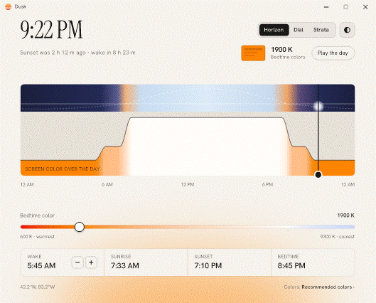

Dusk shifts your screen's colour from daylight to candlelight as the evening goes on, then brings it back by morning. It sits in the tray, starts with Windows, and uses about 8 MB.
One 345 KB file. Windows 10 and 11. No installer needed, no account, no telemetry.
f.lux's slider stops at 1200K. Dusk keeps going, and Darkroom goes further still.
A wake time plus your location's sunrise and sunset. Bedtime colours start 9 hours before you wake.
See the day as a horizon, a dial, or stacked bands. Drag any of them to preview a time.
The window fades after ten seconds. The tray icon turns Dusk off for an hour, until sunrise, or for one app.

| Dusk | f.lux | |
|---|---|---|
| Slider range | 600K–9300K | 1200K–9300K |
| Darkroom mode | yes | yes |
| Memory, window open | 8–13 MB | 5 MB |
| Memory, idle in the tray | under 3 MB | — |
| Download | 345 KB, single file | 1.47 MB installer |
| Colour source | Planck's law + CIE 1931 | curve fit |
f.lux is the more mature app, with per-app rules and smart-light support. Dusk goes warmer, installs nothing, and its maths is covered by tests.